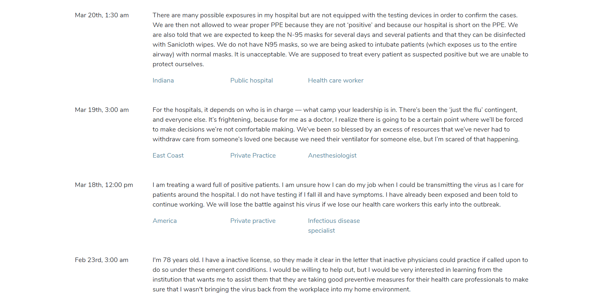
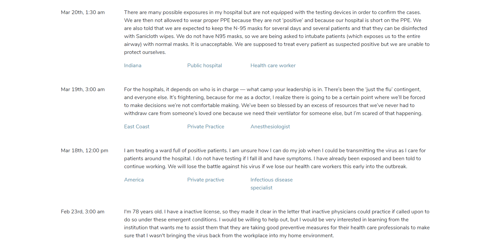

The Unmasked site serves as a forum for medical workers and other front-line fighters in the battle against COVID to tell their stories and voice their concerns. Our team was inspired by articles in publications across both America and the rest of the world where workers are forced to speak anonymously about the unsafe and trauma-inducing conditions in which they're being forced to work.
The site is a mobile-friendly webapp built in React and hosted on Google's Firebase. While still in the prototype phase, users will be able to submit new stories as well as filter existing stories by factors such as medical industry, location and role.
 
